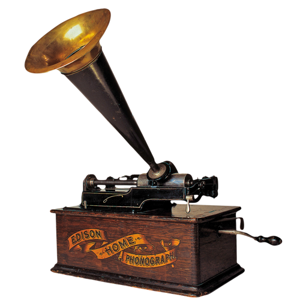
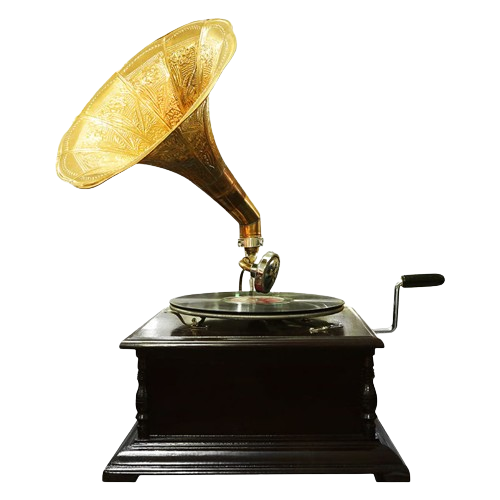
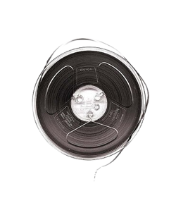
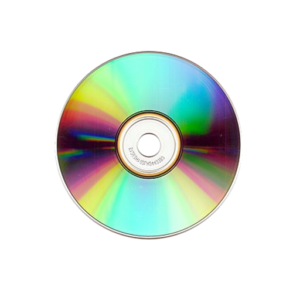
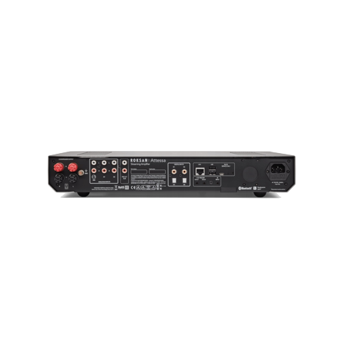

Що таке звук?
Звук — коливальний рух частинок середовища, що поширюється у вигляді хвиль у газі, рідині чи твердому тілі. Органи слуху людини сприймають звуки у відносно вузькому частотному діапазоні. Слуховий апарат багатьох тварин сприймає звуки в значно ширшому інтервалі частот.

-

1877 рік - Фонограф Едісона
Історія звукозапису розпочинається 12 серпня 1877 року, коли Едісон зробив перший у світі звукозапис, зафіксувавши на циліндрі фонографа, що виступав той час носієм інформації, мелодію «Mary Had a Little Lamb». У фонограф постійно вносилися вдосконалення. Наприклад, олов'яна фольга, яка покривала валик, незабаром змінилася тонким шаром воску. Проте, попри всі спроби, домогтися якісного і довговічного запису не вдавалось.
-

1887 рік - Грамофон Еміля Берлінера
У 1888 р. німець Еміль Берлінер винайшов грамофон. Після запису фонограма покривалася лаком. Застосовуючи як оригінал цинк, протравленний в хромовій кислоті, отримували гальванопластичні копії. Перша грамофонна платівка була виготовлена з целулоїду. Трохи згодом почали застосовувати диски з шелаку, шпату і сажі. Пізніше шелак замінили синтетичними смолами. Під час гонінь на джаз, умільці знайшли вельми своєрідний вихід й використали для запису досить доступний матеріал — рентгенографічні плівки. Такі платівки були прозвани у народі записами «на кістках».
-

1930-ті роки - Магнітна стрічка
Попередником технології магнітного запису на стрічку є запис на магнітний дріт, винайдений 1898 року. У цьому першому винаході використовувалася тонка сталева дротина довжиною 2195 метрів (котушка — кілька сантиметрів у діаметрі), що протягувалася повз голівки запису і зчитування зі швидкістю 610 міліметрів за секунду. Запис на дріт довгий час знаходив застосування у записувальних пристроях літаків і космічних апаратів. Перші магнітні стрічки з'явилися у США і Німеччині приблизно у 1930-х роках, і спочатку мали паперову основу. В середині 1930-х німецькі компанії AEG, IG Farben і BASF розробили полімерну стрічку, яка активно використовувалася у магнітофонах у воєнний час.
-

1980-ті роки - Цифровий запис
Існує думка про те, що компакт-диск винайшли, зовсім не Philips і Sony, а американський фізик Джеймс Рассел. Винахідник компакт-диска, який працював у компанії Optical Recording, не заробив на ньому ні цента. Вже 1971 року він продемонстрував свій винахід для зберігання даних. Робив він це з «особистою» метою, оскільки бажав запобігти дряпанню своїх вінілових платівок голками звукознімачів. За вісім років подібний пристрій було «незалежно» винайдено компаніями Philips і Sony.
-

Сучасність - Цифровий аудіо та стрімінг
Сьогодні звук записується та розповсюджується в цифровому форматі, а сервіси стрімінгу дозволяють миттєво отримувати доступ до музики та інших аудіозаписів з будь-якої точки світу.